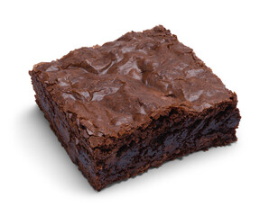

Home
Chewy Brownies Recipe

Description
If you like your brownies chewy in the middle and crisp on the outside edges,
then this recipe is for you!
Ingredients
- 2 cups white sugar
- 1 ½ cups all-purpose flour
- ½ cup baking cocoa
- ½ teaspoon salt
- 1 teaspoon baking powder
- 1 cup vegetable oil
- 4 eggs
- 2 tablespoons light corn syrup
- 1 teaspoon vanilla extract
- 1 cup chopped walnuts (Optional)
- ¼ cup confectioners' sugar
- 4 teaspoons water
Steps
- Preheat oven to 350 degrees F (175 degrees C). Lightly grease a 9x13-inch baking pan.
- Combine white sugar, flour, cocoa, salt, and baking powder in a bowl. Whisk oil, eggs,
corn syrup, and vanilla extract in a small bowl. Stir egg mixture into flour mixture;
fold in walnuts. Spread into prepared baking pan.
- Bake in preheated oven until a toothpick inserted near the center comes out clean,
about 30 minutes.
- Combine confectioner's sugar and water in a small bowl to make a glaze; drizzle over warm brownies.